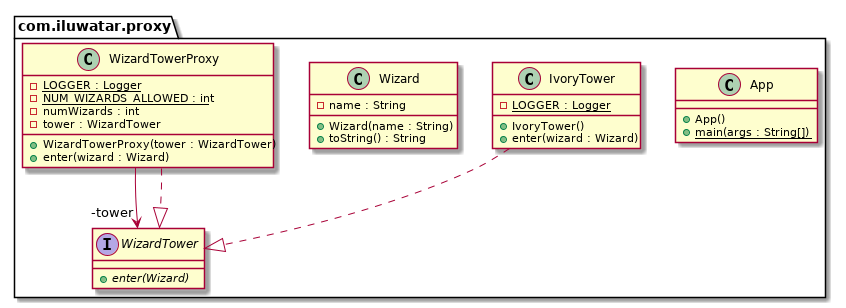

本文最后更新于：2022年6月28日 下午
目的 提供另一个对象的代理或占位符来控制对它的访问
解释 现实世界举例 想象一下，有一座塔，当地的巫师去那里学习咒语。这个象牙塔只能通过一个代理访问，这个代理确保只有前三个巫师可以进入。这里的代理代表塔的功能并向其添加访问控制。
大白话 使用代理模式，一个类代表另一个类的功能。
维基百科解释 代理，在其最一般的形式中，是作为其他事物的界面功能的类。代理是客户机调用的包装器或代理对象，用于在幕后访问真正的服务对象。
编程示例 以我们上面的巫师塔为例。首先，我们有WizardTower接口和IvoryTower类。
1 2 3 4 5 6 7 8 9 10 11 12 13 14 public interface WizardTower {void enter (Wizard wizard) ;@Slf4j public class IvoryTower implements WizardTower {public void enter (Wizard wizard) {"{} enters the tower." , wizard);
然后是一个简单的Wizard类。
1 2 3 4 5 6 7 8 9 10 11 12 13 14 15 public class Wizard {private final String name;public Wizard (String name) {this .name = name;@Override public String toString () {return name;
然后我们有了WizardTowerProxy来为WizardTower添加访问控制。
1 2 3 4 5 6 7 8 9 10 11 12 13 14 15 16 17 18 19 20 21 22 23 24 @Slf4j public class WizardTowerProxy implements WizardTower {private static final int NUM_WIZARDS_ALLOWED = 3 ;private int numWizards;private final WizardTower tower;public WizardTowerProxy (WizardTower tower) {this .tower = tower;@Override public void enter (Wizard wizard) {if (numWizards < NUM_WIZARDS_ALLOWED) {else {"{} is not allowed to enter!" , wizard);
这是塔进入的场景。
1 2 3 4 5 6 7 var proxy = new WizardTowerProxy (new IvoryTower ());new Wizard ("Red wizard" ));new Wizard ("White wizard" ));new Wizard ("Black wizard" ));new Wizard ("Green wizard" ));new Wizard ("Brown wizard" ));
程序输出
1 2 3 4 5 6
类图 
适应范围 当需要比简单指针更通用或更复杂的对象引用时，代理是适用的。以下是代理模式适用的几种常见情况。
远程代理为不同地址空间中的对象提供本地代表。
虚拟代理按需创建昂贵的对象。
保护代理控制对原始对象的访问。当对象应具有不同的访问权限时，保护代理很有用。
通常，代理模式用于
控制对另一个对象的访问
惰性初始化
实现日志记录
促进网络连接
计数对对象的引用
reference